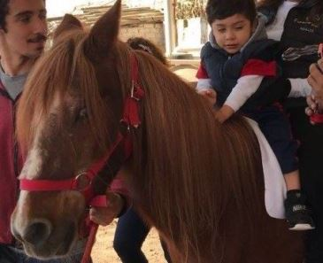
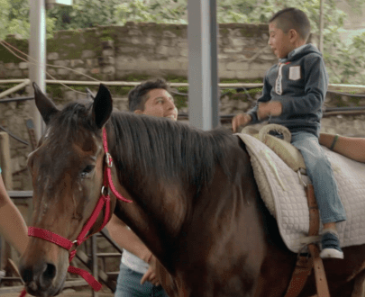
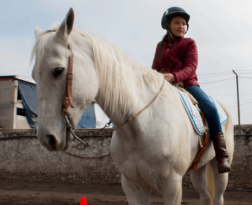

- 01 55 6931 0362
- francoequinoterapia@gmail.com
Nosotros
¿Quiénes somos?
We are always looking out and timely help disadvantaged, see our latest campaign, and if can you pledonaa
You can create a world where no child goes to bed hungry. Make a change
Franco Equinoterapia es una fundación con actividades no lucrativas cuyo objetivo es poder brindar terapias a quienes de otro modo no podrían tener acceso a estas. Fue creada por Xóchitl Franco hace 7 años del deseo de juntar dos de sus pasiones: niños y caballos, con el propósito de resolver el rezago educativo en las escuelas de educación básica pública y crear un ambiente de inclusión.
Las terapias son diseñadas acuerdo a las características y necesidades de cada niño, por lo que la fundadora, quien cuenta con la patente en México, se dio a la tarea de crear un modelo de intervención pedagógica mediante el uso del caballo.

Xóchitl Franco
Directora de Franco EquinoterapiaSÉ PARTE DE FRANCO
Becas
Para ayudar al mayor número de personas que requieran este apoyo. El grado de este dependerá de su nivel socioeconómico.
Nuestros voluntarios
¿Qué opinan nuestros voluntarios de Franco?

Nuestros caballos
Conócelos

Bolsillo
Bolsillo es un caballo chiquito, manso y encantador. Aunque es ciego del ojo izquierdo, nada lo detiene al momento de ayudar con las terapias. Es muy activo, le encanta andar suelto y convivir con los niños

Jalapeño
Que no te engañe la apariencia imponente de Jalapeño, es mucho más cariñoso de lo que parece. Es muy tranquilo y bondadoso, y a la hora de dar terapia, muy colaborador.

Pepe
A pesar de su gran tamaño, Pepe ayuda hasta a los más pequeños. Su buen carácter y su estado físico le permiten contribuir en las terapias. Si quieres hacerte su amigo, regálale un piloncillo, ¡le encantan!